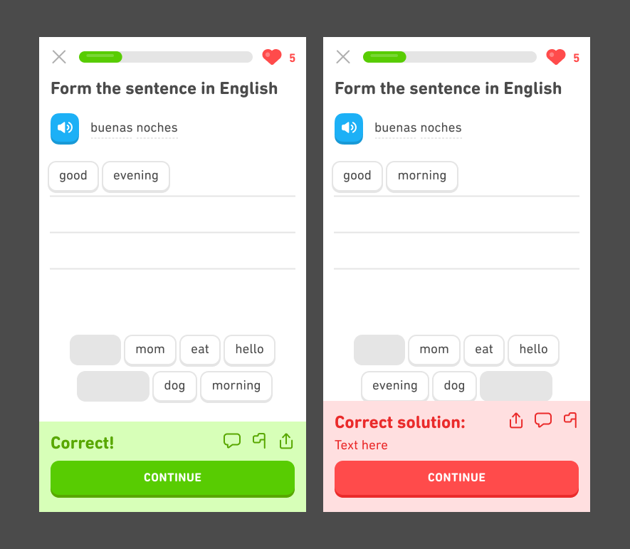

Design conventions are common patterns or rules that designers follow when creating user interfaces. They are important for a number of reasons, one of the most important being that they provide consistency for users. If all apps follow the same design conventions, users will have an easier time understanding how to use them.
One common design convention for mobile applications is that the "X" button, which allows users to close or exit out of a screen, is usually located in the top left corner. By following this convention, users can easily locate the button to close a screen, no matter what app they are using.
Another design convention is that the main navigation of an app is usually located at the bottom of the screen. This is done so that users can quickly access the most important features of the app, and also because it makes it easier for users to reach the navigation buttons with their thumb when using the phone one-handed.
Other design conventions are more noticeable. For example, designers often use red text or icons to denote an error, and green text or icons to denote success. Users quickly learn to associate these colors with certain outcomes, so following this convention helps users understand what is happening in the app.

Overall, design conventions help to create a consistent and user-friendly experience across different mobile applications. When designers follow these conventions, they help users learn how to use their apps more quickly and easily.